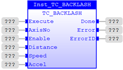
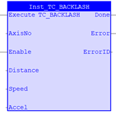

Motion Function
Issues a new BACKLASH motion request for the axis specified by 'AxisNo'.
|
Execute : BOOL; |
Rising edge requests execution |
|
AxisNo : USINT; |
Axis number |
|
Enable : BOOL; |
Set TRUE to enable the backlash function |
|
Distance : LINT; |
Backlash distance to apply on direction change |
|
Speed : LREAL; |
Speed of backlash correction in Units per Second |
|
Accel : LREAL; |
Acceleration of backlash correction in Units s^-2 |
|
Done : BOOL; |
TRUE when function has completed normally |
|
Error : BOOL; |
TRUE if a program error is detected |
|
ErrorID : UINT; |
Returned error number |
When the execute input changes from FALSE to TRUE (rising edge), the function block issues the command for execution in the velocity profile software. If the Enable is TRUE, the function sets up the Backlash operation using the parameters given. If the Enable is FALSE then the Backlash operation is cancelled on the axis defined by AxisNo.
A programming error, such as parameter out of range, will set the Error output and return an error ID number. For the Error ID reference, see the Trio Programming error list.
Inst_TC_BACKLASH( Execute (*BOOL*) , AxisNo (*USINT*) , Enable (*BOOL*) , Distance (*LINT*) , Speed (*LREAL*) , Accel (*LREAL*) );

